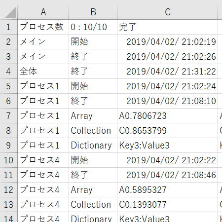

クラスとイベントとマルチプロセス並列処理

エクセルVBAではマルチスレッドによる並列処理はサポートされていません、
つまり通常は順序良く直列に処理していくしかありません。
しかし処理時間が多大にかかるような処理も現実には存在しているため、
エクセルVBAで並列処理したいという要望も出てきます。
VBAからVBScriptを起動して時間のかかる処理を行い、その結果をエクセルで取得するというようなものが多くヒットします。
Excelブック単体でExcelVBAを疑似マルチスレッド化してみる
※運営者さんはTwitterで知っていたのでプログ掲載を直ぐに知りました。
これはOLEオートメーションと呼ばれていますが、複数のプロセスを起動できるのでマルチプロセスと言って良いものになります。
つまりマルチプロセス自体はVBAとしてサポートされていると言えるのです。
しかしながら別のプロセスとして起動しても常に連携されているため、別プロセスのエクセルに対して何らかの命令を行ったときは処理待ちとなってしまいます。
つまり、そのままではマルチスレッドのような並列処理はできないということです。
上記のブログでは、この問題を解決するため、
Application.OnTimeを使うことで別起動したエクセルを切り離してしまおうという発想しています。
Application.OnTimeはタイマー起動されるため、今動いているVBAとは全く別に動き出します。
（ただし同時に並列動作はしません、実行中があればその後に実行されます。）
しかしその起動自体は、元のOnTime実行したプロシージャーとは切り離されて実行予約されます。
これを並列処理（マルチスレッド化）に利用しようというのが他にはない新しい発想になっています。
文字列としてのプロシージャー名を起動する方法（Run,OnTime）
時刻になったら音を鳴らして知らせる（OnTime）
OnTimeの動作を確認する場合は、「時刻になったら音を鳴らして知らせる」が良いでしょう。
時刻になるまではExcelの作業は何の支障もなく普通に行えます。
もちろんマクロも普通に実行できます。
そして時刻が来ると、突然マクロが起動され音が鳴ります。
マルチスレッド、マルチプロセス
しかし、厳密に区分けすることなくどちらでも使われている場合が多いと思います。
本記事では、マルチプロセスと言ったほうがより正しいかなと思い、タイトルはマルチスレッドではなくマルチプロセスとしています。
ただし、そもそも別アプリケーション（別プロセス）でExcelを起動した時点でマルチプロセスであるのだから、
先のブログの「疑似マルチスレッド化」という表現は、非常に内容をうまく表現していると思います。
先に言っておきたい重要なこと
あくまで技術的なサンプルとして方法論の一つとして紹介しているものです。
むしろ、技術的な興味が優先されたVBAとなっていることを先にお断りしておきます。
あくまで、こんな事できるかなーという試験的なVBAだとご理解ください。
その処理自体を見直していくべきものですし、
昨今の事情でいえばPC自体はそんなに高価なものではなくなっていますので、
1台の空きPCを用意して、そこで処理すれば済んでしまう場合も多いはずです。
危険というのは、常に安定動作するかどうかと言うことです。
コンピューター処理で最も注意すべきことは、その処理が正しく行われたかどうかということです。
自動化されても、それが正しくなければ全く意味がないどころか害悪にしかなりません。
業務のコンピューター処理では、安全確実かつ確認しやすいシステムを優先すべきだと思います。
クラスとイベントとマルチプロセス並列処理の概要
VBScriptを使用したマルチプロセスでは、結果の取得は別途出力したファイルを使うことになります。
当然それで何も問題はないのですが、せっかく単体エクセルだけで並列処理化できるのなら、
その単体エクセルの中だけで全て完結させてしまおうという発想になります。
| メインプロセス（親プロセス） | サブプロセス（子プロセス） | |
| クラスのインスタンス作成 クラスの初期処理でNew Excel.Application ↓ サブに対してブック読み込み ↓ サブのプロシージャ起動 ↓ －－－ここで一旦終了－－－ ↓↑ 一定時間毎にサブ完了チェックし続ける ↓ サブのブックより結果情報を取得 ↓ サブを破棄 |
→ |
別プロセス開始 ↓ －－－ここで一旦終了－－－ ↓ 時間のかかる処理を行う ↓ ↓ ↓ ブックCloseでイベント発生 |
上記処理を必要な処理数分繰り返すことになります。
実際のVBAでは、同時最大プロセス数を管理しつつ、
空きが出たら順次プロセスを開始するようにしています。
起動プロシージャーは先に抜ける（一旦終了する）ようにして、終了前のOnTimeで次の処理を予約しておく。
プロシージャー実行中はイベントを受け取れないので、プロシージャーを抜けて未実行状態にする必要があるためです。
メインからプロシージャーが起動されたら、直ぐにOnTimeで次のプロシージャーを起動することでメインに制御を返します。
OnTimeで次のプロシージャーを起動しないと、その処理が終わるまでメインが待ち状態になるためです。
VBAの全コード
それでも、VBA内の随所にコメントは入れてありますので参考にしてください。
Option Explicit
Declare PtrSafe Sub Sleep Lib "kernel32" (ByVal dwMilliseconds As Long)
'テスト実行：最大待ち時間の有効等の切り替え
Private Const isTest As Boolean = True
'結果出力のタイミング：全て一括かプロセス毎か
Private Const isTransaction As Boolean = False
'プロセス起動方法の設定
Private Const AllProc As Integer = 10 '総プロセス数
Private Const MaxProc As Integer = 4 '同時最大プロセス数
Private Const MaxWait As Integer = 180 '最大待ち分数
Private Const iInterval As Integer = 1 '進捗確認間隔秒
Private CLS() As clsASync '並列処理させるクラス
Private ActFlg() As Integer 'プロセス稼働中判定
Private mRtn As Collection '処理結果の一時格納
Private wsRtn As Worksheet '結果シート
Private isEnd As Boolean '処理完了判定
Private OnTime1Time As Date '進捗確認OnTime起動時刻
Private OnTime2Time As Date '最大待ちOnTime起動時刻
'これが起動メイン
Public Sub StartMain()
'開発中のトラブル防止
ThisWorkbook.Save
'モジュールレベル変数初期化・設定
isEnd = False
Erase ActFlg
Set mRtn = New Collection
ReDim CLS(1 To AllProc)
ReDim ActFlg(1 To AllProc)
'先にこのプロシージャーが終わってしまうので、
'イベントによる終了待ちの間、実行中に見せかける
Call SetRunning(True)
'結果シートの初期設定
Set wsRtn = ThisWorkbook.Worksheets("結果")
Call InitializeOutSheet
'プロセスを順次起動、最初なので最大数まで一気に
Dim iProc As Integer
For iProc = 1 To MaxProc
Call StartProcess
Next
'これ以降の動作はタイマーとイベント処理
'応答も含め長時間停止は基本的にダメ
'指定秒毎に進捗確認
Call IntervalConfirm
'最大待ち時間で強制終了、テスト時の困った対策
If isTest Then
OnTime2Time = Now() + TimeSerial(0, MaxWait, 0)
Application.OnTime OnTime2Time, "TimeOverProc"
End If
'終了時刻の表示
wsRtn.Cells(3, 3) = Now()
End Sub
'指定間隔ごとにプロセス数の確認
Private Sub IntervalConfirm(Optional ByVal ReStart As Boolean = True)
'あくまで念の為
If Not CheckProcess Then
Call TimeOverProc("プロセス間の通信が途切れました。" & vbLf & vbLf & _
"強制終了します。")
Exit Sub
End If
'進捗状況の表示
Dim cnt As Integer
Dim iProc As Integer
Dim sTemp As String
cnt = GetProcessCount
iProc = GetFreeProcess
sTemp = cnt & " : " & IIf(iProc = 0, AllProc, iProc - 1) & _
"/" & AllProc
If wsRtn.Range("B1").Value <> sTemp Then
wsRtn.Range("B1").Value = sTemp
Select Case cnt
Case Is > MaxProc
wsRtn.Range("C1") = "オーバー？"
Case Is = MaxProc
wsRtn.Range("C1") = "最大プロセス稼働中"
Case Else
If cnt = 0 And iProc = 0 Then
wsRtn.Range("C1") = "完了"
ElseIf iProc = 0 Then
wsRtn.Range("C1") = "プロセス順次終了中"
Else
wsRtn.Range("C1") = "プロセス順次起動中"
Call ReDraw
If iProc > 0 Then Call StartProcess
End If
End Select
Call ReDraw
End If
'次のOnTimeを実行
If Not ReStart Then Exit Sub
If isEnd Then Exit Sub
If GetProcessCount = 0 And GetFreeProcess = 0 Then Exit Sub
OnTime1Time = Now() + TimeSerial(0, 0, iInterval)
Application.OnTime OnTime1Time, "IntervalConfirm"
End Sub
'空き番号を探してプロセスを開始する
Private Function StartProcess() As Boolean
If GetProcessCount >= MaxProc Then Exit Function
Dim iProc As Integer
StartProcess = False
iProc = GetFreeProcess
If iProc = 0 Then Exit Function
'プロセス起動
Set CLS(iProc) = New clsASync
ActFlg(iProc) = 1
CLS(iProc).Index = iProc
CLS(iProc).OpenBook = ThisWorkbook.FullName
CLS(iProc).AsyncProc = "ChildProc"
CLS(iProc).BeforeCloseProc = "BeforeCloseProc"
CLS(iProc).DeactivateProc = "DeactivateProc"
Call IntervalConfirm(False)
CLS(iProc).StartOnTime
End Function
'ここが動いて本当の終わり
Private Sub EndMain()
On Error Resume Next
'待ち状態のOnTimeのをキャンセル
Application.OnTime OnTime1Time, "IntervalConfirm", , False
If isTest Then Application.OnTime OnTime2Time, "TimeOverProc", , False
'完了表示
Call IntervalConfirm
wsRtn.Cells(4, 3) = Now()
Call SetRunning(False)
MsgBox "完了"
'念の為、最後のダメ押しをやっておく
On Error Resume Next
Dim i As Integer
For i = LBound(CLS) To UBound(CLS)
Set CLS(i) = Nothing
Next
Erase CLS
End '色々な意味でリセットしておく
End Sub
'結果出力シートの初期設定
Private Sub InitializeOutSheet()
With wsRtn
.Select
.Cells.Clear
.Cells(2, 1) = "メイン"
.Cells(2, 2) = "開始"
.Cells(2, 3) = Now()
.Cells(3, 1) = "メイン"
.Cells(3, 2) = "終了"
.Cells(4, 1) = "全体"
.Cells(4, 2) = "終了"
.Columns(3).NumberFormatLocal = "yyyy/mm/dd/ hh:mm:ss"
.Range("A1") = "プロセス数"
.Range("A1").Select
Call ReDraw
End With
End Sub
'結果シートに出力
Private Sub OutputReturn()
Dim varRtn As Variant
Dim myRange As Range
Dim varTmp As Variant
Dim i As Long
'ここは格納方法が無限にあり得るので適宜変更してください。
'子プロセス側の格納に合わせて取り出す必要があります。
'ある程度汎用的に書いても全てを網羅することはできないので、
'以下ではサンプルとして単純なものにしています。
For Each varRtn In mRtn
'最終行の一つ下
Set myRange = wsRtn.Cells(wsRtn.Rows.Count, 1).End(xlUp).Offset(1)
'データタイプ別処理：Caseは適宜追加
Select Case TypeName(varRtn)
Case "Variant()", "String()" '配列：必要に応じて追加
Select Case GetDimension(varRtn) '次元数
Case 1
myRange.Resize(, UBound(varRtn)) = varRtn
Case 2
myRange.Resize(UBound(varRtn, 1), UBound(varRtn, 2)) = varRtn
Case 3
'さすがに必要ないと思うけど
End Select
Case "Collection" 'コレクション
i = 0
For Each varTmp In varRtn
myRange.Offset(, i) = varTmp
i = i + 1
Next
Case "Dictionary" 'ディクショナリー
i = 0
For Each varTmp In varRtn.Keys
If i <= 1 Then
myRange.Offset(, i) = varRtn.Item(varTmp)
Else
myRange.Offset(, i) = varTmp & ":" & varRtn.Item(varTmp)
End If
i = i + 1
Next
Case "Nothing", "Empty"
'結果なしはそれなりの対応
Case Else
'必要なら適宜記載
End Select
Next
'結果保存のコレクションのクリア
If isTransaction Then
Set mRtn = Nothing
Else
Set mRtn = New Collection
End If
End Sub
'配列の次元数取得
Private Function GetDimension(ByRef argAry) As Integer
Dim intDim As Integer
Dim tmpDim As Integer
intDim = 0
On Error Resume Next
Do While Err.Number = 0
intDim = intDim + 1
'これがエラーになった時点で配列が終わり
tmpDim = UBound(argAry, intDim)
Loop
Err.Clear
On Error GoTo 0
GetDimension = intDim - 1
End Function
'空きプロセス番号取得
Private Function GetFreeProcess() As Integer
Dim i As Integer
Dim iProc As Integer
iProc = 0
For i = LBound(ActFlg) To UBound(ActFlg)
If ActFlg(i) = 0 Then
iProc = i
Exit For
End If
Next
GetFreeProcess = iProc
End Function
'稼働プロセス数取得
Private Function GetProcessCount() As Integer
GetProcessCount = 0
If isEnd Then Exit Function
Dim i As Integer
For i = LBound(ActFlg) To UBound(ActFlg)
If ActFlg(i) >= 1 And ActFlg(i) < 999 Then
GetProcessCount = GetProcessCount + 1
End If
Next
End Function
'プロセス間通信が正しいかの確認
'無難に進めば必要ないのでトラブル対応の意味として
Private Function CheckProcess() As Boolean
Dim i As Integer
For i = LBound(ActFlg) To UBound(ActFlg)
Select Case ActFlg(i)
Case 0 '未実行
Case 999 '正常終了
Case 1, 2, 3, 4, 5, 6, 7, 8, 9 '実行中
'1は正常、2～9は猶予
If CLS(i) Is Nothing Then
ActFlg(i) = ActFlg(i) + 1
ElseIf CLS(i).xlApp Is Nothing Then
ActFlg(i) = ActFlg(i) + 1
ElseIf CLS(i).WorkBooksCount = 0 Then
ActFlg(i) = ActFlg(i) + 1
End If
Case Else '異常判定
ActFlg(i) = -1
CheckProcess = False
Exit Function
End Select
Next
CheckProcess = True
End Function
'実行中状態の設定
Private Sub SetRunning(ByVal isRunning As Boolean)
If isRunning Then
Application.Cursor = xlWait
Application.EnableEvents = False
'テスト時はInteractive止めると面倒なので
If Not isTest Then Application.Interactive = False
Else
Application.Cursor = xlDefault
Application.EnableEvents = True
Application.Interactive = True
End If
End Sub
'強制的に再描画させる
Private Sub ReDraw()
Application.ScreenUpdating = True
DoEvents
End Sub
'テスト時に万一終わらないときの用心
Private Sub TimeOverProc(Optional ByVal argMsg As String = "")
On Error Resume Next
isEnd = True
Call OutputReturn
Call SetRunning(False)
Application.OnTime OnTime1Time, "IntervalConfirm", , False
If isTest Then Application.OnTime OnTime2Time, "TimeOverProc", , False
Dim i As Integer
For i = LBound(CLS) To UBound(CLS)
Set CLS(i) = Nothing
Next
Erase CLS
If argMsg = "" Then
argMsg = "要確認：タイムオーバー（" & MaxWait & "分）"
End If
MsgBox argMsg, vbOKOnly + vbExclamation, "TimeOverProc"
End
End Sub
'***** 以下は、子プロセスのイベント発生で呼ばれる *****
'子プロセスのブック・シートにアクセスして情報取得
Public Sub BeforeCloseProc(ByVal iProc As Integer)
If isEnd Then Exit Sub
With CLS(iProc).wb
'子プロセスのシートを直接参照
mRtn.Add .Worksheets(1).UsedRange.Value
'子プロセスより1次元配列を受け取る
mRtn.Add CLS(iProc).GetArray
'子プロセスよりコレクションを受け取る
mRtn.Add CLS(iProc).GetCollection
'子プロセスよりディクショナリーを受け取る
mRtn.Add CLS(iProc).GetDictionary
End With
'結果シートに出力
If Not isTransaction Then Call OutputReturn
End Sub
'BeforeCloseで出力情報は取得したので終わらせる
Public Sub DeactivateProc(ByVal iProc As Integer)
'最後のブックの時だけ、実際は最後しか入ってこないはず
If CLS(iProc).WorkBooksCount <= 1 Then
'クラスの解放はOnTimeの後で
Application.OnTime Now(), "'EventTerminate""" & iProc & """'"
End If
End Sub
'クラスを確実に解放するためここで行う
Public Sub EventTerminate(ByVal iProc As Integer)
Sleep 100 '待たせる必要があるのか、、、
CLS(iProc).xlApp.Quit
Set CLS(iProc).xlApp = Nothing
Set CLS(iProc) = Nothing
ActFlg(iProc) = 999
If GetProcessCount = 0 And GetFreeProcess = 0 Then
If isEnd Then Exit Sub
isEnd = True
Call OutputReturn
Call EndMain
End If
End Sub
Option Explicit
Private RtnArray As Variant '1次元配列用
Private RtnCollection As Object 'コレクション用
Private RtnDictionary As Object 'ディクショナリー用
'1次元配列を戻す
Public Function PassArray(ByVal arg As Variant) As Variant
PassArray = RtnArray
End Function
'コレクションを戻す
Public Function PassCollection(ByVal arg As Variant) As Object
Set PassCollection = RtnCollection
End Function
'ディクショナリーを戻す
Public Function PassDictionary(ByVal arg As Variant) As Object
Set PassDictionary = RtnDictionary
End Function
'別プロセス（子ブック）の入り口
Public Sub ChildProc(ByVal iProc As Integer)
'いかなる応答も基本的にはダメ
'メッセージ等を出さないようにVBAを書くように
Application.DisplayAlerts = False
'開始時刻保存
Dim startTime As Date
startTime = Now()
'DuumyProcがいきなり重い処理の場合を考慮して少し待ち
DoEvents: Sleep 100: DoEvents
'テスト用の適当な処理
Call DuumyProc(iProc)
'結果を戻すシートを作成、内容はテスト確認用
With ThisWorkbook
'とりあえず先頭シートに決め打ち
With .Worksheets.Add(Before:=.Worksheets(1))
.Name = "プロセス" & iProc
.Cells(1, 1) = "プロセス" & iProc
.Cells(1, 2) = "開始"
.Cells(1, 3) = startTime
.Cells(2, 1) = "プロセス" & iProc
.Cells(2, 2) = "終了"
.Cells(2, 3) = Now()
End With
End With
'処理が終わったのでブックを閉じてイベント発生させる
Application.DisplayAlerts = False
Application.EnableEvents = False
Dim wb As Workbook
For Each wb In Application.Workbooks
If wb.Name <> ThisWorkbook.Name Then
wb.Close SaveChanges:=False
End If
Next
Application.EnableEvents = True
ThisWorkbook.Close SaveChanges:=False
On Error Resume Next '念の為
ThisWorkbook.Saved = True
Application.Quit
End Sub
'テスト用なので適当な処理をいろいろと
Private Sub DuumyProc(ByVal iProc As Integer)
'出力フォルダ作成
Dim strDir As String
strDir = ThisWorkbook.Path & "\Result"
If Dir(strDir, vbDirectory) = "" Then MkDir strDir
strDir = strDir & "\" & iProc
If Dir(strDir, vbDirectory) = "" Then MkDir strDir
'出力フォルダ内のファイルを削除
Dim objFSO As Object
Dim objFile As Object
Set objFSO = CreateObject("Scripting.FileSystemObject")
For Each objFile In objFSO.GetFolder(strDir).Files
objFile.Delete
Next
'テスト用にわざと処理時間がかかる処理です
'他への影響軽減のためと、
'「別のプログラムでのOLEの操作が完了するまで待機します」」
'この対策としてDoEventsを適宜（多めに）入れてください。
'テストなので処理時間をバラけさせるためにRndを使用
Dim wb As Workbook
Dim ws As Worksheet
Dim i As Long, ix As Long
Randomize
For ix = 1 To (5 + Int(Rnd * 5))
'新規ブック作成
Set wb = Workbooks.Add
Set ws = wb.Worksheets(1)
'適当に重い計算、ちょっと重すぎかも
With ws
.Name = iProc & "_" & ix
For i = 1 To 10000
.Cells(i, 1) = "A" & i
.Cells(i, 2) = "B" & i
.Cells(i, 3) = i
.Cells(i, 4) = 10000 - i
.Cells(i, 5) = "A" & i
.Cells(i, 6) = "B" & i
.Cells(i, 7) = "RC[-4}*RC[-3]"
Next
DoEvents
Randomize
For i = 1 To (1000 + Int(Rnd * 9000))
.Cells(i, 7).FormulaArray = _
"=SUMPRODUCT((R1C[-6]:R10000C[-6]=RC[-2])*(R1C[-5]:R10000C[-5]=RC[-1]),R1C[-4]:R10000C[-4]*R1C[-3]:R10000C[-3])"
DoEvents
Next
End With
'Excel保存
Randomize
For i = 1 To (1 + Int(Rnd * 50))
wb.SaveAs strDir & "\test" & _
Format(ix, "000") & "_" & Format(i, "000") & ".xlsx"
DoEvents
Next
wb.Close SaveChanges:=True
DoEvents
'適当に待ち
Randomize
For i = 1 To (1 + Int(Rnd * 30))
Randomize
Application.Wait Now() + TimeSerial(0, 0, 1 + Int(Rnd * 1))
DoEvents
Next
Next
'1次元配列で戻す場合のサンプル
ReDim RtnArray(1 To 2)
RtnArray(1) = "プロセス" & iProc
RtnArray(2) = "Array"
For i = 1 To 3
ReDim Preserve RtnArray(1 To UBound(RtnArray) + 1)
RtnArray(UBound(RtnArray)) = "A" & Rnd
Next
'コレクションで戻す場合のサンプル
Set RtnCollection = New Collection
RtnCollection.Add "プロセス" & iProc
RtnCollection.Add "Collection"
For i = 1 To 3
RtnCollection.Add "C" & Rnd
Next
'ディクショナリーで戻す場合のサンプル
Set RtnDictionary = CreateObject("Scripting.Dictionary")
RtnDictionary.Add "Key1", "プロセス" & iProc
RtnDictionary.Add "Key2", "Dictionary"
For i = 3 To 5
RtnDictionary.Add "Key" & i, "Value" & i
Next
End Sub
上記2つは同一モジュールでも構いませんが、
管理しやすさを考えたら、別モジュールにした方が良さそうに思います。
モジュール名は何でも構いません。
Option Explicit
Public WithEvents xlApp As Excel.Application
Private iProc As Integer '配列のインデックス
Private mOpenBook As String '開くブックのフルパス
Private mAsyncProc As String '並列処理するProc
Private mBeforeClose As String 'プロシージャー名
Private mDeactivate As String 'WorkbookDeactivate
Private mWb As Workbook '子プロセスに読み込んだブック
'公開プロパティ
Public Property Let Index(ByVal arg As Integer)
iProc = arg
End Property
Public Property Let OpenBook(ByVal arg As String)
mOpenBook = arg
End Property
Public Property Let AsyncProc(ByVal arg As String)
mAsyncProc = arg
End Property
Public Property Let BeforeCloseProc(ByVal arg As String)
mBeforeClose = arg
End Property
Public Property Let DeactivateProc(ByVal arg As String)
mDeactivate = arg
End Property
Public Property Get wb() As Workbook
Set wb = mWb
End Property
Public Property Get WorkBooksCount() As Integer
If xlApp Is Nothing Then
WorkBooksCount = 0
Exit Property
End If
WorkBooksCount = xlApp.Workbooks.Count
End Property
'公開メソッド
'ブックを別プロセスに読み込みOnTime起動
Public Sub StartOnTime()
Set mWb = xlApp.Workbooks.Open(Filename:=mOpenBook, ReadOnly:=True)
'OnTimeではクラス内は呼び出せないので標準モジュールを
xlApp.OnTime Now(), "'" & mAsyncProc & """" & iProc & """'"
End Sub
'子プロセスから1次元配列を取得
Public Function GetArray() As Variant
GetArray = xlApp.Run("'" & mWb.FullName & "'!PassArray", "引数予備")
End Function
'子プロセスからコレクションを取得
Public Function GetCollection() As Object
Set GetCollection = xlApp.Run("'" & mWb.FullName & "'!PassCollection", "引数予備")
End Function
'子プロセスからコレクションを取得
Public Function GetDictionary() As Object
Set GetDictionary = xlApp.Run("'" & mWb.FullName & "'!PassDictionary", "引数予備")
End Function
'クラス初期処理
Private Sub Class_Initialize()
Set xlApp = New Excel.Application
xlApp.Visible = False 'すぐに切り替えられるように
xlApp.EnableEvents = False 'これはケースバイケース
End Sub
'クラス終了処理
Private Sub Class_Terminate()
'正常時には解放済だが、トラブル対応
On Error Resume Next
xlApp.DisplayAlerts = False
mWb.Close SaveChanges:=False
xlApp.Quit
Set xlApp = Nothing
End Sub
'Applicationのイベント
'先にイベント発生
Private Sub xlApp_WorkbookBeforeClose(ByVal wb As Workbook, Cancel As Boolean)
Application.Run mBeforeClose, iProc '標準モジュールで処理する
End Sub
'後にイベント発生
Private Sub xlApp_WorkbookDeactivate(ByVal wb As Workbook)
Application.Run mDeactivate, iProc '標準モジュールで処理する
End Sub
全体の中で、以下が使われています。
・イベント
・コールバック
・配列
・ディクショナリー
・コレクション
・コールバック
ただしコールバックについては、本来はあまり多用すべきではないと思っているのですが、
さすがに、今回のような場合は代替え手段がありませんので当然使うことになります。
便利な機能ではありますが、デバッグが面倒になってしまう事が多くなります。
VBA内で「Worksheets("結果")」これで最初に指定しています。
テスト方法に合わせて適宜変更してください。
総プロセス数(AllProc)も少ない数に変更して試してください。
30分くらいはかかるとものとお考え下さい。
最大プロセス数を1にして実行すればブレークポイント等で止めたりしても大きな問題になりません。
バックグラウンドのExcelが残っても、タスクマネージャーで1つ「タスクの終了」すれば済みます。
まとめと感想
結局お互いが資源の取り合い状態になってしまい、速度面では期待したほどの効果は得られないことになります。
今回のテストケースで言えば、PC性能にもよりますがプロセス数は4個くらいまでが限界ではないでしょうか。
それ以上増やしても速度効果はあまりない、というよりむしろ遅くなってしまう場合も出てくるはずです。
つまり、稼働プロセス全てで重い計算を同時に行うとか、同時に同じディスクにIOに行くとか、
このような場合は、当然のことながら速度効果は少なくなります。
今回のテストでは重い計算を入れたので、プロセス数が多くなるとここでCPUが振り切ってしまいます。
つまり広い意味でのリソースの競合を考慮しなければ劇的な速度アップは望めないということです。
少なくとも、単に並列処理したからと言ってなんでも簡単に速くなるわけではないということをご理解ください。
「別のプログラムでのOLEの操作が完了するまで待機します」
このメッセージが出てしまいます。
この応答で一旦停止してしまう為、本マクロは正しく処理を続行できません。
従ってそのような状況にならないように適宜DoEventsを入れる必要があります。
これについての確実な対策はほぼ無いと認識しています。
DoEventsで解決しない場合は余計なアプリは停止する等の対策も必要になるかもしれません。
ただし大抵の場合は適宜DoEventsを入れることで対応できる場合が多いはずです。
処理時間がかかるものでテストしなければ検証にならないのですが、
そんなに時間のかかるものを、そうそう何回も実行していられないということです。
1時間かかる実行を、ただじっと見ていられるわけがありません。
別の作業をしながら、「あっエラーが出た・・・」
そして今やっている作業を終えてからソース確認して修正してまたテスト実行。
1日に何回もテストできるものではありません。
従って掲載VBAにおいては、
実行環境・実行方法によってはエラーや正しくない結果が出ることが十分にありえることはご承知おきください。
Windows8.1(64bit) + Excel2016(32bit)
Windows10(64bit) + Excel2010(32bit)
Windows10(64bit) + Excel2019(64bit)
ヘッダーメニューの「お問い合わせ」より頂ければ幸いです。
最後に
実務で使う為には細部の作りこみをしっかりやる必要があります。
ただし細部を作りこむには多大な労力が必要となるでしょう。
何よりデバッグが困難です、OnTimeとイベントの組み合わせなので、
ステップインでのデバッグは普通にはできないものとお考え下さい。
言うまでもないと思いますが、使用は自己責任でお願いします。
同じテーマ「VBAクラス入門」の記事
VBAクラスの作り方：列名の入力支援と列移動対応
VBAクラスの作り方：列名のプロパティを自動作成する
VBAクラスの作り方：独自Rangeっぽいものを作ってみた
クラスとイベントとマルチプロセス並列処理
クラスとCallByNameとポリモーフィズム(多態性)
オートフィルターを退避回復するVBAクラス
オートフィルター退避回復クラスを複数シート対応させるVBAクラス
コレクション（Collection）の並べ替え（Sort）に対応するクラス
VBAクラスのAttributeについて（既定メンバーとFor Each）
VBAクラスを使ったイベント作成（Event,RaiseEvent,WithEvents）
VBAクラスのAttributeについて（既定メンバーとFor Each）
新着記事NEW ・・・新着記事一覧を見る
VBA100本ノック 100本目：WEBから100本ノックのリストを取得｜VBA練習問題（3月3日）
VBA100本ノック 99本目：自動席替え（行列と前後左右が全て違うように）｜VBA練習問題（3月2日）
VBA100本ノック 98本目：席替えルールが守られているか確認｜VBA練習問題（3月1日）
VBA100本ノック 97本目：Accessデータを取得（グループ集計）｜VBA練習問題（2月27日）
VBA100本ノック 96本目：Accessデータを取得（マスタ結合&抽出）｜VBA練習問題（2月26日）
VBA100本ノック 95本目：図形のテキストを検索するフォーム作成｜VBA練習問題（2月24日）
VBA100本ノック 94本目：表範囲からHTMLのtableタグを作成｜VBA練習問題（2月23日）
VBA100本ノック 93本目：複数ブックを連結して再分割｜VBA練習問題（2月22日）
VBA100本ノック 92本目：セルの色を16進で返す関数｜VBA練習問題（2月20日）
VBA100本ノック 91本目：時間計算（残業時間の月間合計）｜VBA練習問題（2月19日）
アクセスランキング ・・・ ランキング一覧を見る
1.最終行の取得（End,Rows.Count）｜VBA入門
2.RangeとCellsの使い方｜VBA入門
3.変数宣言のDimとデータ型｜VBA入門
4.マクロって何？VBAって何？｜VBA入門
5.Range以外の指定方法（Cells,Rows,Columns）｜VBA入門
6.セルのコピー&値の貼り付け（PasteSpecial）｜VBA入門
7.繰り返し処理（For Next)｜VBA入門
8.セルに文字を入れるとは（Range,Value）｜VBA入門
9.マクロはどこに書くの（VBEの起動）｜VBA入門
10.とにかく書いてみよう（Sub,End Sub）｜VBA入門
このサイトがお役に立ちましたら「シェア」「Bookmark」をお願いいたします。
記述には細心の注意をしたつもりですが、
間違いやご指摘がありましたら、「お問い合わせ」からお知らせいただけると幸いです。
掲載のVBAコードは動作を保証するものではなく、あくまでVBA学習のサンプルとして掲載しています。
掲載のVBAコードは自己責任でご使用ください。万一データ破損等の損害が発生しても責任は負いません。